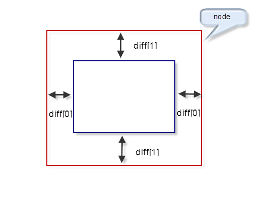

Scroll API¶
引入¶
页面引入 kissy.js :
<script src='kissy.js'></script>
New in version 1.2: 通过 use 加载 dd 模块：
KISSY.use("dd",function(S,DD){
var Scroll = DD.Scroll;
});
See also
KISSY 1.2 Loader 新增功能
构造器¶
- class DD.Scroll(config)¶
监控容器关联的所有可拖放对象，必要时随着可拖放对象进行自动滚动。
Parameters: config (object) – 实例化可拖放对象的配置项，包括
- config.node¶
类型选择器字符串或者 HTMLElememt，自动滚动容器，随其内的可拖放节点自动滚动。
- config.rate¶
类型 Array<number>，长度为 2，默认值 [10,10] . 表示容器自动滚动的速度，数组元素 1 表示横向滚动的速度，数组元素 2 表示纵向滚动的速度。
- config.diff¶
类型 Array<number>，长度为 2，默认值 [20,20] . 当鼠标进入容器内边缘区域时开始自动滚动。 数组元素 1 表示横向容器内边缘宽度，数组元素 2 表示纵向容器内边缘宽度。如图所示

Loading